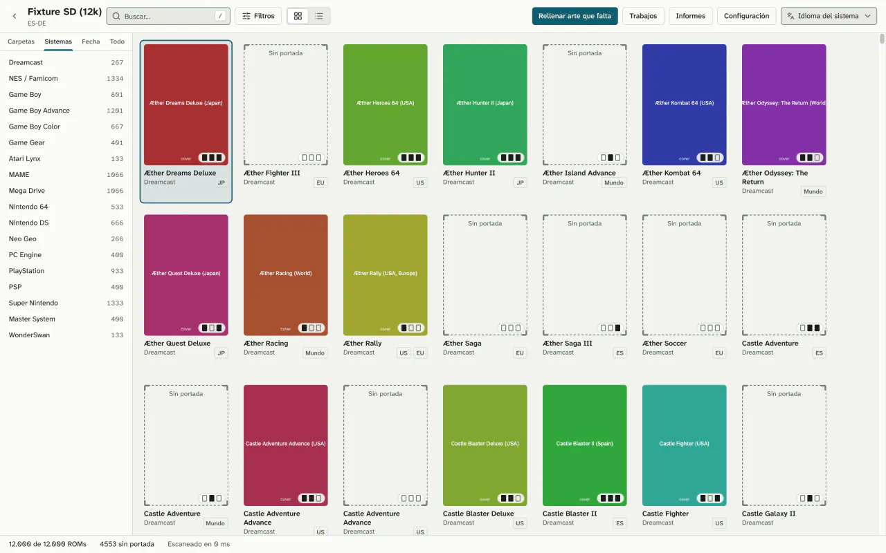
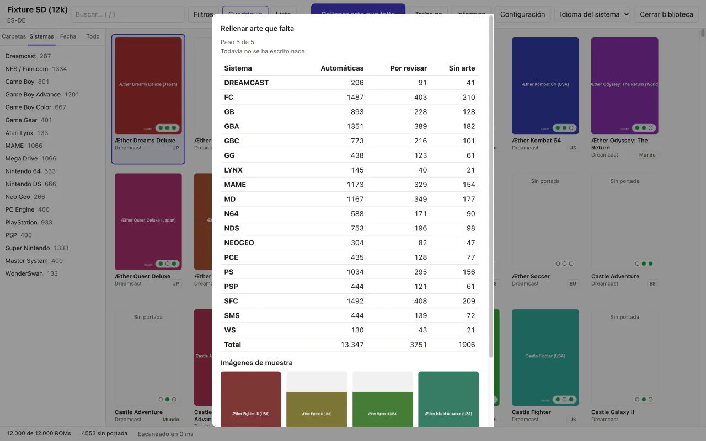
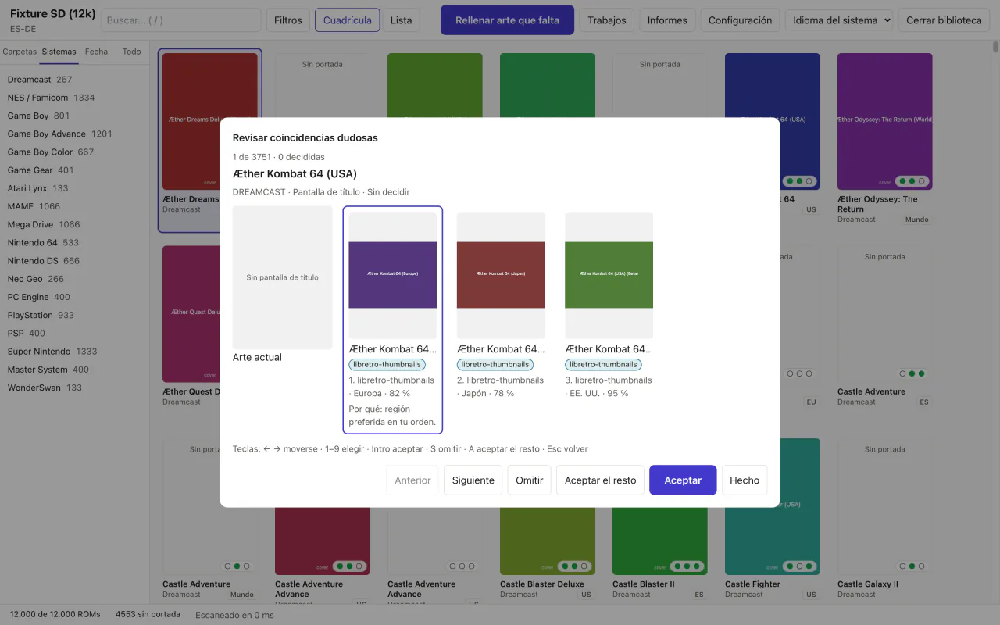
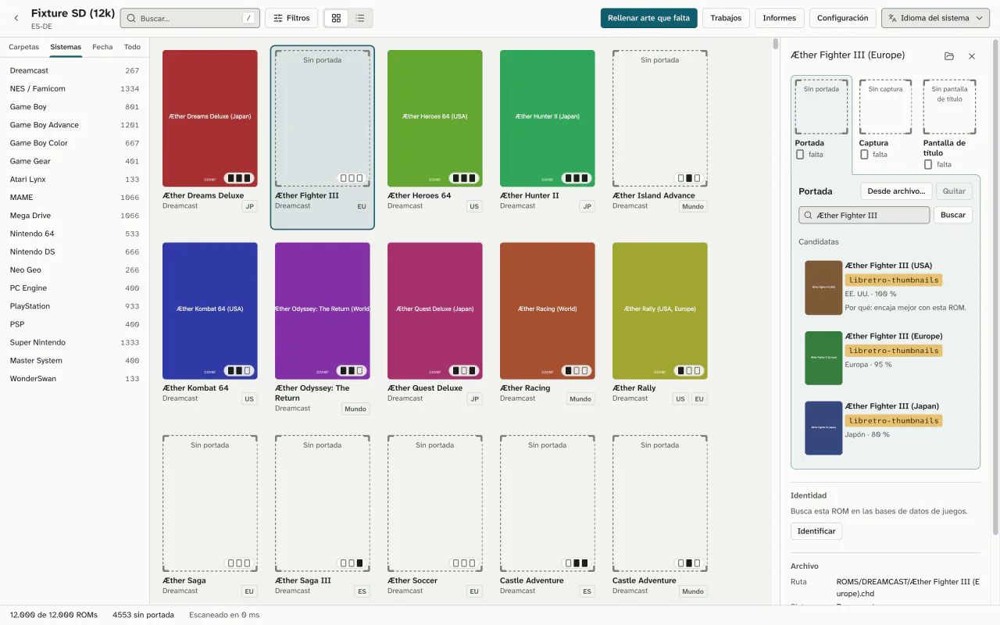

Cada ROM, con su portada.
Coverly ROMs revisa la tarjeta SD de tu consola portátil, te enseña qué juegos no tienen portada y las añade de una vez. Primero lo simula, y nada de lo que ya tienes se toca sin que lo pidas.
- Gratis
- Sin cuenta
- Sin telemetría
- Windows, macOS y Linux
- Sin portadaGBAÆther Rally
- Sin portadaSNESCastle Fighter
- Sin portadaN64Crónicas Quest 64
- Sin portadaMDNeon Harbor
- Sin portadaGBCLunar Kart
- Sin portadaGBPixel Saga III
- Sin portadaPSRuta Ámbar
- Sin portadaNESSky Knights
- Sin portadaGGDeep Coral
- Sin portadaNEOGEOIron Valley
- Sin portadaPCEMoth Lantern
- Sin portadaPSPOrbit Derby
Cuatro pasos. Los dos primeros no escriben nada.
-
Abre la carpeta o la tarjeta SD.
Coverly reconoce el formato de tu firmware o frontend y te enseña cada sistema con lo que le falta: portada, captura o pantalla de título. También con bibliotecas de más de 10.000 juegos.

-
Prueba el trabajo antes de hacerlo.
Cada ROM se identifica por su huella (CRC32, MD5 o SHA1) y, si no, por su nombre. El asistente elige la imagen según la región de la ROM, tus fuentes o los votos, y te enseña el plan entero.
Hasta que pulsas Ejecutar, no se escribe nada.

-
Decide solo las dudosas.
Las coincidencias seguras van solas. Las dudosas esperan en una cola que recorres con el teclado, y la elegida dice por qué.

-
Aplica, y deshaz si no te convence.
Las imágenes se escriben de una en una, sin dejar archivos a medias. Deshacer devuelve la tarjeta a como estaba. Y cualquier portada se cambia a mano desde la ficha del juego.

Tu tarjeta vuelve como estaba, con más portadas.
- Simulación por defecto
- Para escribir hay que pedirlo. En la terminal, con
--apply. - Solo lo que falta
- Las portadas que ya tienes no se sustituyen salvo que elijas hacerlo, y entonces se guarda una copia antes.
- Copias fuera de la tarjeta
- Las copias y el registro de cada trabajo van a la carpeta de datos de la app, no a la SD.
- Nada fuera de la biblioteca
- No escribe fuera de la carpeta que abriste, y los nombres de archivo valen para FAT y exFAT.
- Un fallo no lo para todo
- Si una ROM falla, el resto sigue. Sin conexión o con límite de peticiones, el trabajo se pausa y lo reanudas luego.

Escribe donde tu consola busca.
Ocho formatos de firmware y frontend, detectados al abrir la carpeta, y más de 50 sistemas con los nombres de carpeta de cada uno.
| Formato | Portada | Captura | Título |
|---|---|---|---|
| Anbernic de fábrica | |||
| GarlicOS | |||
| Onion OS | |||
| MinUI y NextUI | |||
| muOS | |||
| ES-DE | |||
| Batocera, Knulli y EmulationStation | |||
| RetroArch |
En Batocera, Knulli y EmulationStation también actualiza gamelist.xml, con deshacer. Para otro firmware, crea tu propio formato con vista previa.
# Qué falta (solo lee)
$ coverly audit /Volumes/SD --missing-only
# El plan, sin escribir nada
$ coverly fill /Volumes/SD
# Ahora sí, sin las dudosas
$ coverly fill /Volumes/SD --apply --auto-only
# Y si no te convence
$ coverly undoLas otras opciones, comparadas.
Las más completas funcionan solo en Windows o piden montarlas a mano; Coverly ROMs quiere ser la opción segura en los tres sistemas.
| Característica | Coverly ROMs | Skraper | Skyscraper | ARRM | Mini Scraper |
|---|---|---|---|---|---|
| Windows | Sí | Sí | — | Sí | Sí, x64 |
| macOS | Sí, Apple silicon e Intel | Sin versión nativa | Compilándolo tú | No | Solo Apple silicon |
| Linux | x64 y ARM64 | Con Mono | Compilándolo tú | No | x64 |
| App con ventana | Sí | Sí | No, terminal | Sí | Sí |
Formato Anbernic (Imgs/) | Directo | Configurándolo | Configurándolo y renombrando | Configurándolo | Directo |
| Cuenta | No | ScreenScraper, en la práctica | Recomendada | Recomendada | No |
| Simulación y deshacer | Sí | — | — | — | — |
Dónde van por delante
Skraper, Skyscraper y ARRM usan ScreenScraper y traen vídeos, mezclas de imágenes y metadatos. Coverly ROMs solo rellena imágenes. Mini Scraper también funciona sin cuenta y ya tiene versiones publicadas.
Fuentes: skraper.net, github.com/Gemba/skyscraper, jujuvincebros.fr y github.com/tzubertowski/mini-scraper-cfw.
Ya se puede descargar.
Versión {{release.version}}, del {{release.date_es}}. Gratis, para siempre.
macOS
macOS 11 o posterior, Apple silicon e Intel
Descargar .dmg ({{release.macos_universal.mib_es}} MiB)Windows
Windows 10 y 11, x64
Descargar instalador ({{release.windows_x64.mib_es}} MiB)O el .msi ({{release.windows_x64_msi.mib_es}} MiB)Linux x64
AppImage o paquete .deb
Descargar AppImage ({{release.linux_x64_appimage.mib_es}} MiB)O el .deb ({{release.linux_x64_deb.mib_es}} MiB)Linux ARM64
AppImage o paquete .deb
Descargar AppImage ({{release.linux_arm64_appimage.mib_es}} MiB)O el .deb ({{release.linux_arm64_deb.mib_es}} MiB)Solo la línea de comandos
Casi listo para descargar.
La primera versión se está preparando. Cuando salga, aquí tendrás los instaladores para macOS, Windows y Linux, y la línea de comandos.
Todavía no hay versión publicada
Este hueco se rellena solo el día que salga. Mientras tanto, puedes compilarla desde el código fuente: el README explica cómo.
La primera vez que lo abras
- macOS: si dice que no puede comprobar el desarrollador, ve a Ajustes del Sistema, Privacidad y seguridad, y pulsa «Abrir igualmente».
- Windows: si SmartScreen avisa, pulsa «Más información» y luego «Ejecutar de todas formas».
- Linux: da permiso de ejecución al AppImage o instala el .deb.
Avisan porque las descargas no llevan certificados de Apple ni de Microsoft. Comprueba cada archivo con SHA256SUMS.
Lo que aún no hace
- ScreenScraper: previsto, aún no disponible.
- Vídeos, mezclas de imágenes, marquesinas o logos.
- Editar metadatos, renombrar o verificar ROMs.
- Funcionar en la propia consola.
- Aún no se ha probado en consolas reales.
Antes de que preguntes.
¿Es gratis?
Sí. No cuesta nada, no pide cuenta y no tiene versión de pago. El código es AGPL-3.0.
¿Trae ROMs o portadas?
No. Coverly ROMs no incluye ROMs, BIOS ni arte de juegos. Las imágenes se descargan de libretro-thumbnails y, si pones tu propia clave, de SteamGridDB. Cada imagen es de sus dueños.
¿Va a sobrescribir mis portadas?
No, salvo que lo pidas. Por defecto solo rellena lo que falta. Si eliges sustituir, antes guarda una copia en la carpeta de datos de la app, no en la tarjeta, y Deshacer la devuelve.
¿Necesito una cuenta?
No. libretro-thumbnails funciona sin cuenta. SteamGridDB es opcional: usa tu propia clave, que se guarda en el llavero del sistema.
¿Con qué consolas funciona?
Con las que usan los formatos de Anbernic de fábrica, GarlicOS, Onion OS, MinUI y NextUI, muOS, ES-DE, Batocera, Knulli y EmulationStation, o RetroArch. Para otro firmware puedes crear tu formato con vista previa. Aún no se ha probado en consolas reales.
¿Por qué avisan Gatekeeper y SmartScreen?
Porque las descargas no llevan certificados de Apple ni de Microsoft. La primera vez basta con confirmar que quieres abrirla, y cada versión trae un SHA256SUMS para comprobar sus archivos.
¿Envía datos a algún sitio?
No hay telemetría. La app solo se conecta a las fuentes de arte y, si no lo desactivas, a la comprobación de actualizaciones al arrancar. Las imágenes se recodifican, así que no llevan metadatos.
¿Cómo se actualiza?
Desde la propia app, con versiones de GitHub Releases verificadas con minisign antes de instalarse. Hay canal estable y beta, y nunca se reinicia en mitad de un trabajo. La línea de comandos usa coverly update.
Abre la tarjeta. Mira lo que falta.
Lo demás lo decides tú, con la simulación delante.